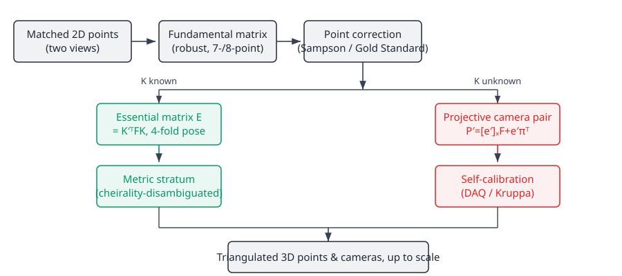

Structure from Motion
| This documentation was generated with the assistance of AI. Please report any inaccuracies. |
irurueta-ar turns matched 2D point correspondences across a sequence of images into reconstructed 3D points
and camera poses. This page ties together the previous pages — Fundamental matrix estimation,
Essential matrix, Point correction, and
Self-calibration — into the end-to-end pipeline, and explains the two paths a
reconstruction can take depending on whether the cameras' intrinsic parameters are known.

Choosing the initial pair
The very first decision is which two views to reconstruct from first. Two views whose camera centers are too
close together, or whose visible points lie on a ruled quadric (most commonly, a plane), produce a degenerate
epipolar geometry — the 7-point algorithm's cubic has 3 real roots
instead of 1. irurueta-ar detects this and simply skips to the next candidate view rather than trying to
reconstruct from a degenerate pair Irurueta, PhD thesis §4.2 (algorithm
4.1).
Two paths from the fundamental matrix
Once a good pair and its fundamental matrix are found (and correspondences corrected as in
Point correction), there are two ways to obtain an initial camera pair, matching
com.irurueta.ar.sfm.InitialCamerasEstimatorMethod:
Intrinsics known — straight to metric. If a (possibly approximate) calibration matrix is
available for both views, Essential matrix gives directly, and its
four-fold cheirality-disambiguated decomposition gives a metric camera pair immediately — no self-calibration
needed. Maps to EssentialMatrixInitialCamerasEstimator
(InitialCamerasEstimatorMethod.ESSENTIAL_MATRIX).
Intrinsics unknown — projective first, metric later. Without any known , only is available. As shown in Fundamental matrix estimation, any can generate some pair of cameras that reproduces it, but that pair is not unique — it is defined only up to an arbitrary projective transformation:
for any plane direction and scale Irurueta, PhD
thesis §3.2.4. Triangulating points with this pair places the whole reconstruction in an arbitrary
projective stratum: valid for triangulation and for adding more views, but visibly distorted (straight
lines bend, parallel lines don’t meet at infinity correctly) until it is upgraded. That upgrade is exactly
self-calibration: once enough views are available, the dual absolute
quadric (or, pairwise, the Kruppa equations) recovers each view’s and the plane at infinity, giving the
projective-to-metric transform that turns the projective reconstruction into a metric one, correct
up to an overall similarity (scale) Irurueta, PhD thesis §4.6, §5.
Maps to DualImageOfAbsoluteConicInitialCamerasEstimator / DualAbsoluteQuadricInitialCamerasEstimator
(InitialCamerasEstimatorMethod.DUAL_IMAGE_OF_ABSOLUTE_CONIC / DUAL_ABSOLUTE_QUADRIC /
DUAL_ABSOLUTE_QUADRIC_AND_ESSENTIAL_MATRIX).
Either way, the common entry point is com.irurueta.ar.sfm.InitialCamerasEstimator.create(…), which
dispatches to the right concrete estimator for the chosen InitialCamerasEstimatorMethod.
Triangulation
Given a camera pair (in whichever stratum) and corrected correspondences, 3D points are recovered with the same
two-tier pattern as everything else: non-robust
LMSEHomogeneousSinglePoint3DTriangulator / LMSEInhomogeneousSinglePoint3DTriangulator /
WeightedHomogeneousSinglePoint3DTriangulator / WeightedInhomogeneousSinglePoint3DTriangulator, or the robust
family {RANSAC,LMedS,MSAC,PROSAC,PROMedS}RobustSinglePoint3DTriangulator when some of the per-point ray
correspondences (across more than 2 views) might themselves be wrong.
Adding more views and the full reconstructor
Once an initial two-view (or paired-views) reconstruction exists, each new view is resected by matching its
image points against already-triangulated 3D points and solving for its camera matrix with DLT + a robust
estimator (the same RANSAC/DLT combination used for camera resectioning throughout this library)
Irurueta, PhD thesis §4.3 (algorithm 4.3). irurueta-ar packages this
whole loop — initial pair selection, point correction, initial cameras, triangulation, self-calibration when
needed, and incremental resectioning of further views — into the com.irurueta.ar.sfm.SparseReconstructor
family:
| Class | Use case |
|---|---|
|
Just the initial pair — projective or metric reconstruction from two views. |
|
A sequence processed as consecutive view pairs. |
|
The general, incremental multi-view pipeline ( |
|
The same pipelines fused with inertial-sensor (accelerometer/gyroscope) SLAM estimates to resolve absolute scale and orientation without relying on scene assumptions. |
Example
var configuration = new TwoViewsSparseReconstructorConfiguration();
configuration.setInitialCamerasEstimatorMethod(InitialCamerasEstimatorMethod.DUAL_IMAGE_OF_ABSOLUTE_CONIC);
var reconstructor = new TwoViewsSparseReconstructor(configuration, listener);
reconstructor.start();
// listener callbacks receive matched samples requests, the estimated fundamental/essential matrices,
// the initial camera pair, and the final triangulated 3D points as reconstruction progressesReferences
Irurueta, PhD thesis §3.2.4, §4, §5
Hartley & Zisserman, 2003 chapter 10 ("3D Reconstruction of
Cameras and Structure")
Pollefeys, 2000